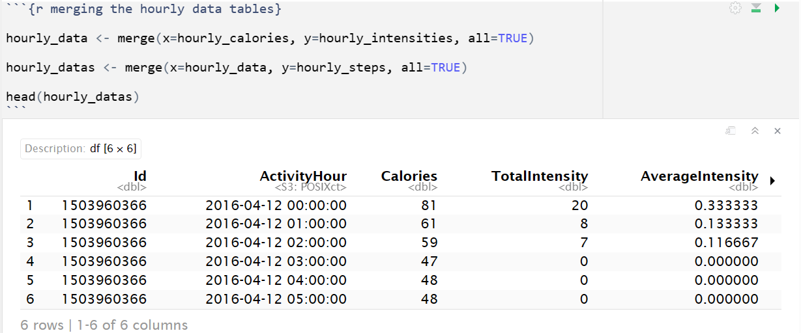

Fitbit Tracker - User's Data Analysis
Business Overview
Bellabeat is a small successful high-tech manufacturer which produces health-focused products geared towards women. Given their success they have the potential to expand into the global smart device market. Their products include a watch or bracelet that tracks sleep, stress and activity. They also have a bottle to track hydration levels. These trackers connect to the Bellabeat app which allows the tracking of their daily habits to help women make better wellness decisions. Bellabeat also offers memberships for personalized health, nutrition and lifestyle guidance.
The Business Task:
The founder of Bellabeat had assigned us, the marketing team, with the task of exploring how consumers are using non-Bellabeat smart devices. Using the insights we had to come up with a marketing strategy recommendation that can be applied to one of Bellabeat's product. This may help introduce new growth opportunities so that the company can potentially become a larger player in the global smart devices market space.
The Dataset:
The founder had suggested using the Fitbit Fitness Tracker Data
(CC0: Public Domain, dataset made available through Mobius).
This is a public data coming from a credible organization which supports the open science movement. The data
was gathered from users that consented to sharing their usage data in a survey. No personal information
is in the data ensuring their privacy. The dataset has data about the user's daily sleep, weight, heart rate and activity level.
For our analysis, we used the following data sets:
- daily_activity
- hourly_calories
- hourly_intensities
- hourly_steps
- Outdated dataset: The data was collected in 2016 thus it is important to note that the analysis may not be the most reliable in terms of giving us an up-to date marketing strategy to implement. The tech space evolves fast so ideas from the insight may already have been implemented by competitors today.
- Sample size: The dataset is said to be collected from 30 users, this sets us at the minimum number of samples that should be collected in order for the distribution of our analysis to be reflective of the average population based on the Central Limit Theorem.
- Lack of user gender details: The dataset does not specify the gender of the users and it is also unclear whether the goal of the company is to become a larger global player by reaching out to more women globally or to extend its services to being inclusive of other gender identities. Based on Bellabeat's purpose, we are assuming the goal is to grow by reaching more women globally, and thus we are assuming the data was randomly and fairly collected across 30 female users of various races and age ranges.
- Missing units: Some of the data does not specify the units such as for distance we are uncertain whether it is in meters, km or miles. It is also unclear how level of intensity for being active is measured therefore where the units have not been specified, we will simply refer to it as 'units'.
Data Processing:
Data cleaning in Google spreadsheet -
- Removed duplicates: Google spreadsheet was first used to remove any duplicate records. However, no duplicates were found in any data sets.
Transforming data in R -
- Corrected the 'Date' and 'ActivityHour' column format: The datasets were uploaded to R and by default the data type for the date columns was 'chr'. We casted them to date/ date-time where appplicable.
- Column names: It is advisable to always ensure column names follow a consistent and legible naming convention set by the organization. In our case we did not change the column names as they all had followed a consistent format that was fairly easy to read.

Data Exploration:
Data exploration in R -
- Merged hourly_calories, hourly_intensities and hourly_steps data sets: The three data sets had a common column 'ActivityHour' on which the sets can be joined to make the analysis step easier.
- Verifying number of users: Using R's n_distinct() function we counted the number of users and saved the information in a table
as a summary. We can see the data sets actually has 33 users info logged and not 30.

Data exploration in BigQuery -
With the data sets we have, we used SQL to obtain a summary of the averages of each user daily and hourly logs.- Querying a summary of the daily averages by user:
Resulting output of the first 10 records in ascending 'Id' order:SELECT Id, CAST(AVG(Calories) as INT) as AvgCalorie, CAST(AVG(TotalSteps) as INT) as AvgStepTotal, CAST(AVG(TotalDistance) as INT) as AvgTotalDistance, CAST(AVG(VeryActiveMinutes) as INT)as AvgVeryActiveMinutes, CAST(AVG(FairlyActiveMinutes) as INT) as AvgFairlyActiveMinutes, CAST(AVG(LightlyActiveMinutes) as INT) as AvgLightlyActiveMinutes, CAST(AVG(SedentaryMinutes) as INT) as AvgSedentaryMinutes FROM FitbitTrackerData.daily_activity GROUP BY Id; - Querying a summary of the hourly averages by user:
Resulting output of the first 10 records in ascending 'Id' order:SELECT Id as Id, CAST(AVG(Calories) as INT) as AvgCalories, CAST(AVG(TotalIntensity) as INT) as AvgIntensity, CAST(AVG(StepTotal) as INT) as AvgStepTotal FROM (SELECT hourly_calories.Id, hourly_calories.ActivityHour, hourly_calories.Calories, hourly_intensities.TotalIntensity, hourly_intensities.AverageIntensity, hourly_steps.StepTotal FROM FitbitTrackerData.hourly_calories JOIN FitbitTrackerData.hourly_intensities ON hourly_calories.Id = hourly_intensities.Id AND hourly_calories.ActivityHour = hourly_intensities.ActivityHour JOIN FitbitTrackerData.hourly_steps ON hourly_steps.Id = hourly_intensities.Id AND hourly_steps.ActivityHour = hourly_intensities.ActivityHour) GROUP BY Id; - User's daily averages:
Here we can see the average user burns 2282 calories, takes 7519 steps total, walks a total distance of 5 units, is very active for a total of 20 minutes and sedentary for a total of 999 minutes daily. - User's hourly averages:
Data exploration in Google spreadsheet -
The resulting outputs were saved as a CSV file and then uploaded to Google spreadsheets for some quick brief analysis. The outputs show 33 records total, reflective of the averages for each user.We used spreadsheet's AVG() built in function to summarize the average of all users for the daily and hourly logs. The results were rounded to whole numbers.

Here we can see that on an hourly basis, the average user burns 97 calories, takes 316 steps total and is active on an intensity level of 12 units.
Data Visualization in R:
With the data being transformed to a more useful format, we can now explore some user trends through visualization.-
The following code snippet was used to generate the different graphs.
- Total number of steps taken versus calories burned on an hourly basis: Below we can see from the density of the data points that most users
took between 0-2500 steps on an hourly basis burning upto 250 calories. We can also see a positive correlation between the two variables, more steps taken
potentially burns more calories. Here it's important to clarify that correlation does not mean causation thus it does not mean taking more steps is the reason
for burning more calories with absolute certainty.
- Activity intensity and the total calories burned on an hourly basis: Below we can see more users having an activity intensity of 0 - 50 also burning
upto 250 calories hourly. A positive correlation exists between the intensity and calories burned as well.

- Total number of minutes being very active versus the total calories burned on a daily basis: The visualization below shows more user density below
12.5 minutes showing more users are very active for less than 12.5 minutes on a daily basis. A positive correlation is shown between having a higher
number of active minutes and burning more calories.
- Total distance walked versus the total calories burned on a daily basis: Below we can see the user data points are somewhat fairly distributed across
having walked a total distance of between 0 - 10 units daily. Those having walked for a total of 10 units burned between 1500 - 4500 calories total and those
having walked 0 units burned between 0 to 2700 calories. A positive correlation can also be seen between the total distance walked and the number of calories
burned.
- Total number of steps taken versus the total calories burned on a daily basis: Below we can see a fair distribution of the data points between 0 - 15,000
total steps taken daily similar to the total distance walked versus calories burned trend we saw earlier. These users burn upto 4000 calories. As with all other
graphs, a positive correlation is seen between the total steps taken and number of calories burned.
- Understanding the correlation between the number of sedentary minutes versus the number of calories burned daily: Below we can see how there exists a
negative correlation between the number of sedentary minutes and the number of calories burned. We can see the average users are sedentary for between 650 to a
little over 1300 minutes, i.e. 10.8 to 21.7 hours, and they burn between 1500 to 3500 calories.
- Users use their trackers to actively monitor their daily and hourly activity levels i.e. the intensity of their activeness and duration, the distance they walk and the total steps they take as well as the number of calories they've burnt.
- We also noticed a positive correlation between being active at a higher intensity, having longer very active minutes, having a higher total distance walked, walking more steps and the number of calories burned.
- A negative correlation was observed between being sedentary for more minutes versus the number of calories burned.
- It was also noted that the average user burns a total of 2282 calories, takes 7519 steps total, walks a total of 5 distance units, is very active for 20 minutes, is fairly active for 13 minutes and sedentary for 999 minutes (16.7 hours). According to the MedicalNewsToday there's no strict rule about how many steps one should take daily however the International Journal of Behavioral Nutrition and Physical Activity recommends inactive adults to incorporate at least 30 minutes of brisk walking, which is equivalent to about 3,000 – 4,000 steps a day while active, healthy individuals can aim for 10,000 steps. Thus the average user gets under the healthy individual's goal but at the minimum above the recommended range for an inactive adult.

Visualization in Tableau:
Summary:
From the FitBit user data analysis a few remarks can be made:
Recommendations:
Based on the analysis we would recommend creating a new app feature that encourages a more active lifestyle to stay healthy through the addition of some notifications. The notification will notify an individual when they have met the daily goal of a lesser inactive adult, i.e. the 3000 - 4000 steps mark to mark the day's minimum milestone being reached. Additionally, once an individual crosses that mark we will set up a challenge to encourage the individual to push themselves further by setting a goal of reaching 10,000 steps by the end of day to become more active.